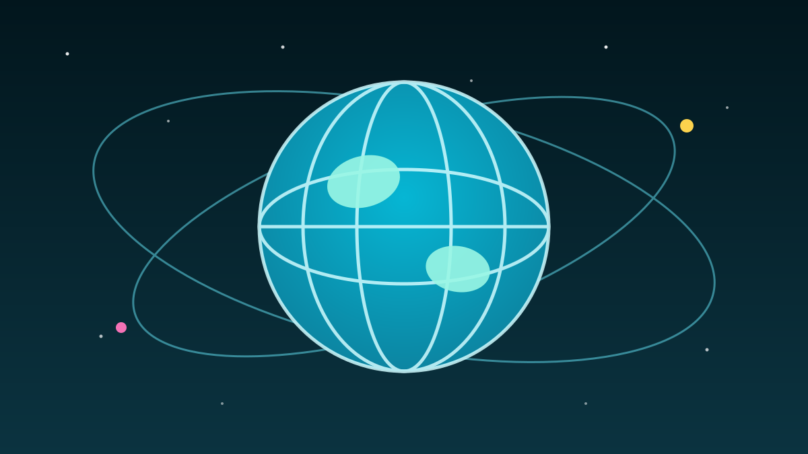

1 / 6

🌍 DUNIA
Bos IMF: Ekonomi Dunia Ketarik "Dua Arah"
Energi mahal, utang rekor, boom AI yang berisiko — tiga-tiganya datang barengan. Ini peringatan paling serius IMF tahun ini. Geser →
2 / 6
🎤
Siapa bilang apa?
Kristalina Georgieva, Direktur Pelaksana IMF, berpidato di Singapura pada Rabu, 7 Oktober 2026. Ini pratinjau buat Annual Meetings IMF–Bank Dunia yang digelar pekan depan di Bangkok.
Kata kuncinya: ekonomi dunia lagi "ditarik dua arah" — kejut pasokan energi yang negatif vs kejut permintaan AI yang positif.
3 / 6
🛢️
Energi: $100/barel masih betah
Harga minyak bertahan di $100 per barel. Kapasitas kilang yang rusak nambah margin crack-spread sampai +$100/barel buat produk kayak diesel.
Musim dingin bakal naikkin permintaan, sementara pasokan gas alam terhambat ancaman pengiriman LNG lewat Selat Hormuz. Kombinasi yang nggak enak.
4 / 6
💸
Utang: rekor sejak PD II
Utang publik global ada di level tertinggi sejak Perang Dunia II, diproyeksikan tembus 100% PDB dunia sebelum 2030. Georgieva nyebut negara maju — dipimpin AS — sebagai "worst offenders".
Buktinya: yield obligasi 10 tahun AS, Jerman, dan Jepang lagi di titik tertinggi sejak 2007, 2009, dan 1996. Solusinya menurut IMF: konsolidasi fiskal yang kredibel.
5 / 6
🤖
AI: bisa +0,5% pertumbuhan… atau shock besar
Skala investasi AI terhadap PDB bisa melampaui pembangunan rel kereta, jaringan listrik, sampai telekom — raksasa banget. Kalau dieksekusi benar, AI bisa nambah 0,5 poin persen pertumbuhan global per tahun.
Tapi kalau pasar kecewa sama hype-nya? Georgieva bilang efeknya bisa jadi "far-reaching shock". Downgrade pertumbuhan terbesar jatuh ke Ukraina dan negara-negara Teluk. Target IMF: 3,0% (2026), rebound ke 3,4% (2027) — yang kini terancam.
6 / 6
🤔
Efeknya ke lo apa?
Minyak mahal = harga barang ikut naik, biaya hidup makin berat, dan nilai tukar ikut goyang. Utang global rekor = suku bunga susah turun, cicilan dan peluang kerja ikut kena imbasnya.
Dan AI yang katanya bakal ngebantu ekonomi? Justru lagi jadi taruhan terbesar dunia — masa depan karier lo ada tepat di tengah-tengahnya. Makanya ngerti ekonomi global itu bukan materi sekolahan doang, tapi bekal hidup.